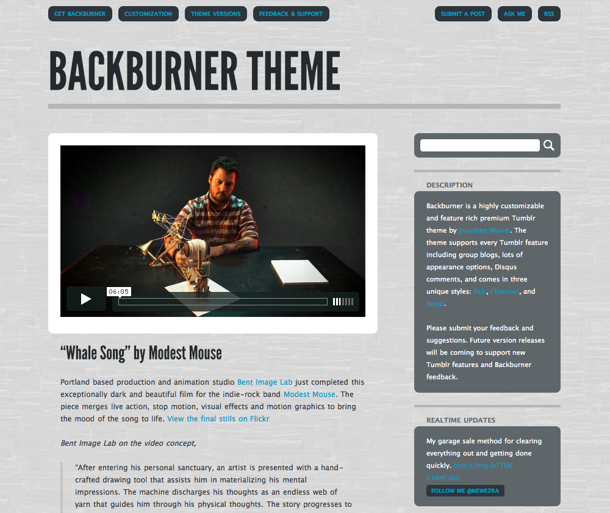

Ash Style
Charcoal Style
Royal Style
Three Unique Backburner Styles
Backburner comes with options to select three unique styles in the Appearance menu. Preview the styles at http://backburnertheme.tumblr.com/.
- Ash Style - Light version with dark desaturated blues contrasted with vivid blues
- Charcoal Style - Dark version with rich reds and light yellows
- Royal Style - Dark purple with rich reds and light blue. Based on the custom theme on http://jonathanmoore.com